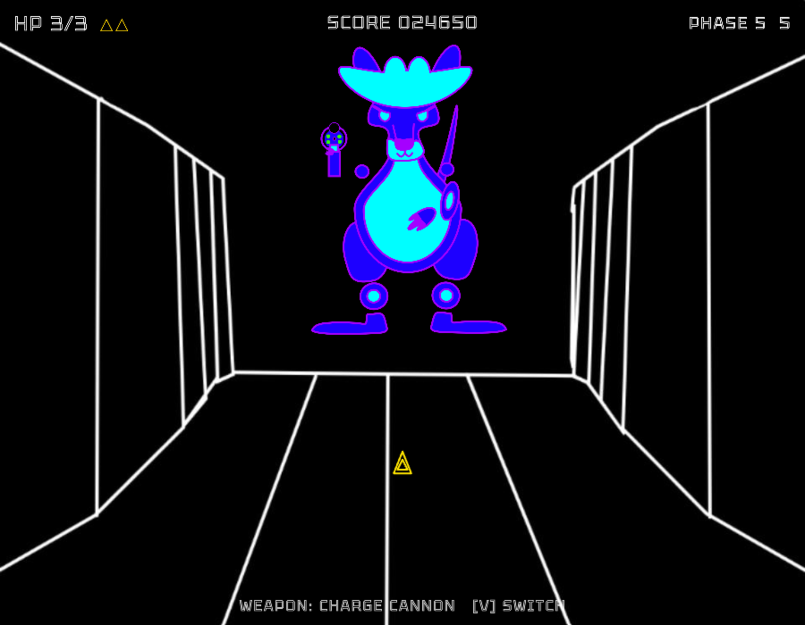

Kangunroo
Kangunroo is the boss of Cyber Zoo, a gunslinging kangaroo in a cyan hat. It is the same character in both of its forms: the normal boss you fight in the Cyber Zoo stage, and Kangunroo Delta, the version that comes back in the boss rush. Its Delta form is not a different character.
Appearance
Kangunroo is a tall, upright kangaroo drawn in the game's flat line-art style, with a blue body outlined in purple and a large cyan belly pouch. It wears a wide cyan hat with a ruffled brim, has long ears, and angry, glowing eyes. It holds a revolver in one hand and a thin blade in the other. Its legs are mechanical, with round cyan joints above flat boots.
Boss fight: normal form
In Cyber Zoo, Kangunroo is not a shooting fight but a duel. You are frozen in place. He stares you down, then flashes a pink ring. Press fire right after the ring appears to hit him.
- Too early is a foul: the round resets and nobody takes damage.
- Too late and he hits you for 1 HP.
- Hits to win: 5.
Tip: watch the ring, not his face. Don't guess.
Boss fight: Delta form (Kangunroo Delta)
Kangunroo Delta is fight 1 of the boss rush, in Outer Space, stage 2. He leaps nonstop between the floor, the ceiling and both walls, and about half of his leaps aim at you. Every 4–7 leaps he rests for a second.
- Touching him costs 1 HP, and any shot hurts him. HP: 50.
- At 0 HP the Cyber Zoo duel starts again. One miss ends it: you lose 2 HP and he gets all 50 HP back.
Tip: keep moving, and shoot when he rests.
